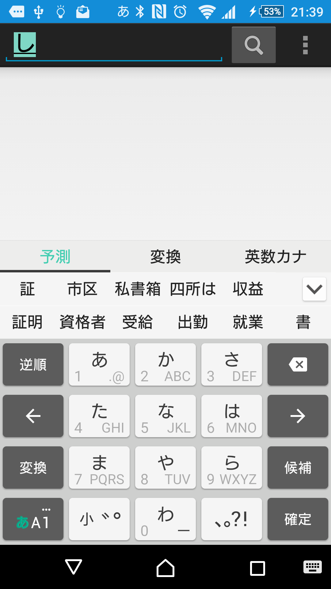
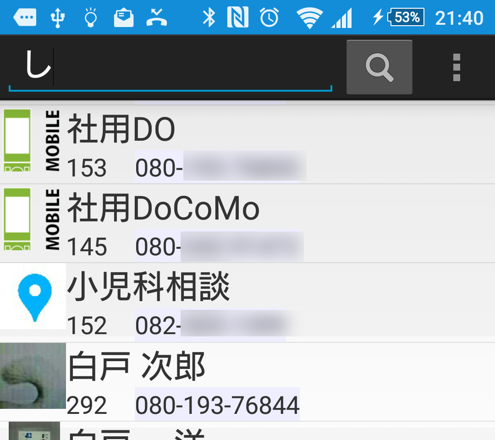

|
Devised it to be able to easily call
Phone2nd |
|
Search of the Telephone books |
|
| I search a telephone book by the name (phonetic symbol of the family name). |
How to use |

|
 | |
| . |
I input a letter (phonetic symbol of the family name) which you want to search, and, please tap a "search" button.
|
||
The search feature of many telephone books becomes "the increment search" to narrow down a candidate to whenever one character
inputs Because there is the case which cannot support uniformly including having character input program (input method)
and key or not
It is my ability lack here. Let me do a kanji not to be readable other than a phonetic symbol with the problem until the final version because the idea of the Extensions is just for a search or the phone number search more. |
 | ||